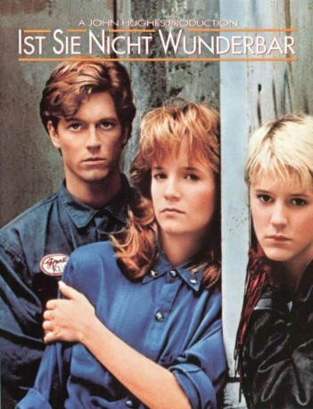
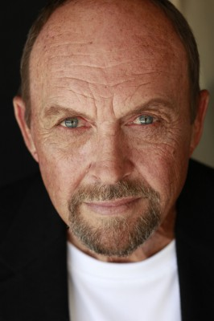
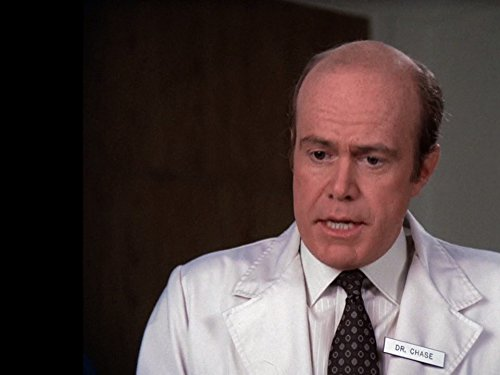

#5051 Ist sie nicht wunderbar?
Alternativ: Some Kind of Wonderful
 
 IMDB-Wertung: 7.1 / 10
IMDB-Wertung: 7.1 / 10  Metascore: 0
Metascore: 0 
Der 18jährige Keith verknallt sich auf der Highschool in die viel umschwärmte Amanda, die jedoch leider schon in festen Händen ist. Ausgerechnet in den widerlichen Hardy einem Sohn aus reichem Haus, hat sie sich verliebt. Für Keith, der gerne Maler werden möchte und nebenher an einer Tankstelle jobbt, gibt es nur noch einen Traum: Einen Abend mit Amanda zu verbringen. Seinen Frust wird Keith bei der jungenhaften Watts los, die für ihn mehr ein Kumpel ist. Watts allerdings ist in Keith verliebt. Keith schafft es tatsächlich, Amanda einzuladen und plündert sein Sparkonto um diesen Abend unvergeßlich zu machen. Aber dann entwickeln sich die Ereignisse ganz anders...
Jahr: 1987
Dauer: 94 Minuten
FSK: 12
Land: USA Studio: UIPTonspuren: DD5.1 - ,
Untertitel:
Auflösung: 1080p (1912x1072) Größe: 8099 MB
Genre: Drama, Liebe
Regisseur: Howard Deutch
Drehbuch: Guillermo Ríos
Soundtrack:
Darsteller:
 Eric Stoltz als Keith Nelson
Eric Stoltz als Keith Nelson- Mary Stuart Masterson als Watts
 Lea Thompson als Amanda Jones
Lea Thompson als Amanda Jones Craig Sheffer als Hardy Jenns
Craig Sheffer als Hardy Jenns-  John Ashton als Cliff Nelson
 Elias Koteas als Duncan
Elias Koteas als Duncan Molly Hagan als Shayne
Molly Hagan als Shayne Maddie Corman als Laura Nelson
Maddie Corman als Laura Nelson- Jane Elliot als Carol Nelson
- Candace Cameron Bure als Cindy Nelson
- Chynna Phillips als Mia
 Scott Coffey als Ray
Scott Coffey als Ray Lee Garlington als Gym Instructor
Lee Garlington als Gym Instructor- Laura Leigh Hughes als Holly
- Amy Lynne als Laura's Friend
- Patricia Gaul als Mrs. Gale
-  Kenneth Kimmins als Detention Teacher
 James MacDonald als Hardy's Friend
James MacDonald als Hardy's Friend J. Patrick McNamara als Fight Teacher
J. Patrick McNamara als Fight Teacher- Jonathan Schmock als Carparker
 Cathy Cavadini als Party Guest
Cathy Cavadini als Party Guest Ike Eisenmann als Party Guest
Ike Eisenmann als Party Guest- Deborah Fallender als Party Guest
- Carmine Caridi als Museum Guard
- Laura Tubelle als Laura's Friend
- Michael Bergman als Duncan's Friend
- Megan Daniels als Duncan's Friend
- Dale L. Evans als Duncan's Friend
- Peter Elbling als Maitre 'D
- James Vallely als Carparker
- Lita Stevens als Amanda's Friend
- Christine Spiotta als Waitress
- Tom Ashton als The March Violets
- Laurence Elliott als The March Violets
- Cleo Murray als The March Violets
- Andy Tolson als The March Violets
- Steve Alterman als Party Guest
- Pamela Anderson als Party Guest
- Noelle Harling als Party Guest
- Barbara Harris als Party Guest
- David McCharen als Party Guest
- Paige Pollack als Party Guest
- Bryan Scott als Party Guest
- Vernon Scott als Party Guest
Datei: X:\1987\Ist sie nicht wunderbar (1987, FSK12, 1912x1072).mkv seit 22.12.2016
Festplatte: HD 1987-1991
 Es gibt insgesamt 50 Filme in der Gruppe '1987'
Es gibt insgesamt 50 Filme in der Gruppe '1987'